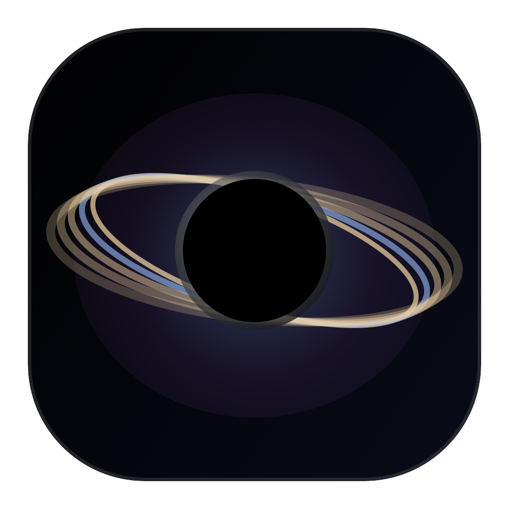
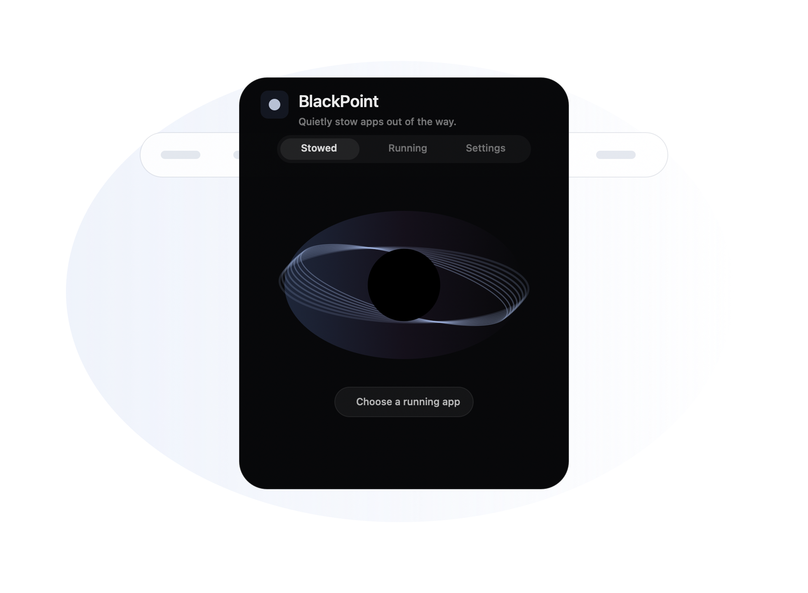

Stow the current app
Send the frontmost app out of sight with one shortcut, without closing windows or losing state.

BlackPointmacOS menu bar focus utility
BlackPoint keeps noisy apps out of sight, out of Command-Tab, and ready to restore when you need them again.

curl -fsSL https://7757.github.io/BlackPoint/install.sh | bash
Designed for menu bar speed
Send the frontmost app out of sight with one shortcut, without closing windows or losing state.
Keep your current task visible and stow other running apps in a single action.
Optionally filter Command-Tab so stowed apps stay out of your normal app flow.
Fast by default
BlackPoint ships with sensible global shortcuts and a compact settings page for customization.
Download
The install script downloads the latest GitHub release, replaces the old app in /Applications, clears quarantine attributes, and opens BlackPoint.
curl -fsSL https://7757.github.io/BlackPoint/install.sh | bash
Latest release
Menu bar controls, global shortcuts, launch at login, localization, release packaging, and the GitHub Pages website.